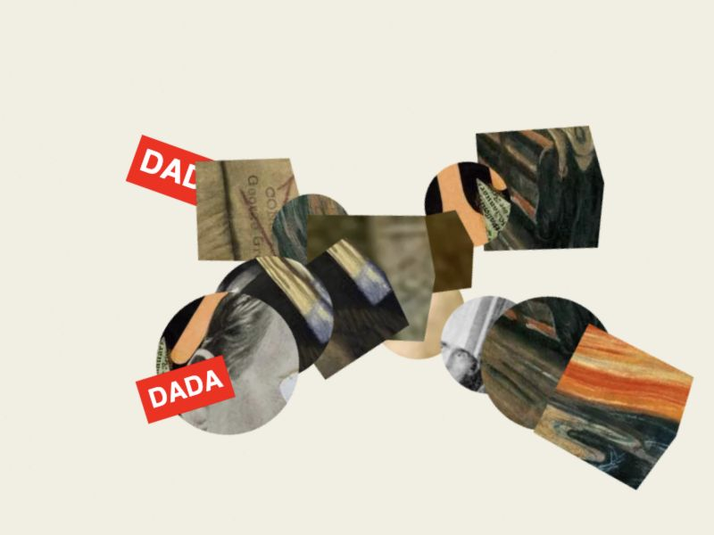
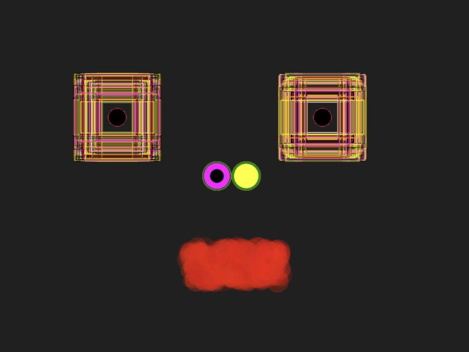
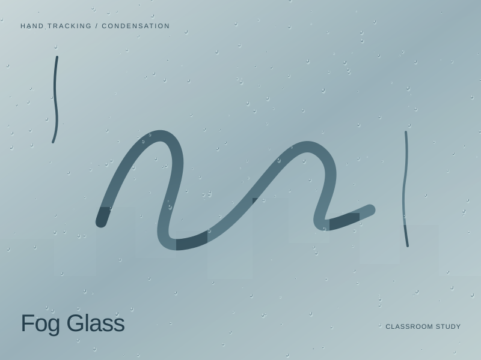

01
Particle Brush
Move across the grid to disturb the lines. Click to push nearby particles outward.
Source Code ↗ (new tab)Experiments in interaction, motion, and computational art.Pratt Institute · 2026
Move across the grid to disturb the lines. Click to push nearby particles outward.
Source Code ↗ (new tab)
Drag to compose with image and text fragments. Click to scatter; Space clears; S saves.
Source Code ↗ (new tab)
Moving particles connect when nearby. Click to introduce more particles.
Source Code ↗ (new tab)A portrait composed with basic geometric shapes.
Source Code ↗ (new tab)
Randomized marks and overlapping shapes build an evolving portrait.
Source Code ↗ (new tab)
Wipe misted glass with your hands. A clap switches tools as droplets slowly leave their own trails.
Source Code ↗ (new tab)I'm Yuming Liang, an Art and Technology student at Pratt Institute. This portfolio brings together my Creative Coding I coursework in JavaScript and p5.js.
Select an artwork to read about the project, then run its interactive sketch. Source Code opens the original p5.js Editor project or the classroom source on GitHub.